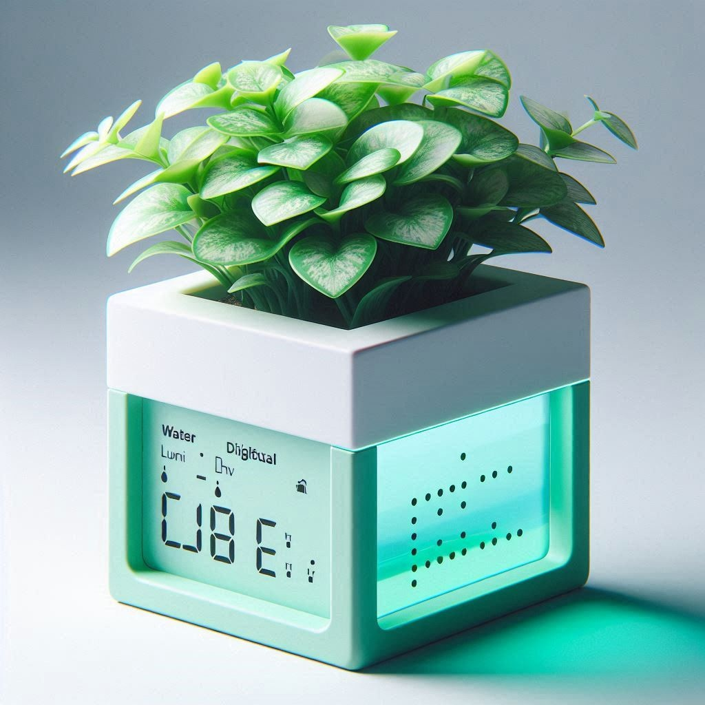

HELLO, MY NAME IS
marVase
The Smart Way to Nurture Your Plants
Meet marVase, the intelligent plant vase designed to create the perfect environment for your plants to thrive. Equipped with advanced sensors and an automated watering system, marVase takes the guesswork out of plant care, ensuring your plants receive the right amount of water, moisture, and climate control for optimal growth. üåø Give your plants the care they deserve with marVase. Smart. Simple. Sustainable.

üå± Soil Moisture Monitoring
Automatically detects soil moisture levels and waters your plant only when needed, preventing under or overwatering.
üå°Ô∏è Temperature & Humidity Sensors
Keeps track of the surrounding environment, alerting you if conditions move outside the ideal range for your plant.
üíß Water Reservoir with Smart Tracking
Built-in water storage with real-time level monitoring ensures your plant is always hydrated. Refill alerts let you know when it’s time to add more water.
üì± Smart App Integration
Monitor your plant’s health, receive notifications, and adjust settings remotely through the marVase mobile app. Connect with smart home assistants for voice control.
üîã Energy-Efficient & Sustainable
Powered by a rechargeable battery or optional solar panel, marVase keeps your plant thriving with minimal energy consumption.
✨ Why Choose marVase?
Automates plant care for stress-free maintenance.
Ideal for busy lifestyles, frequent travelers, or anyone who loves plants.
Enhances plant health and growth with real-time environmental monitoring.